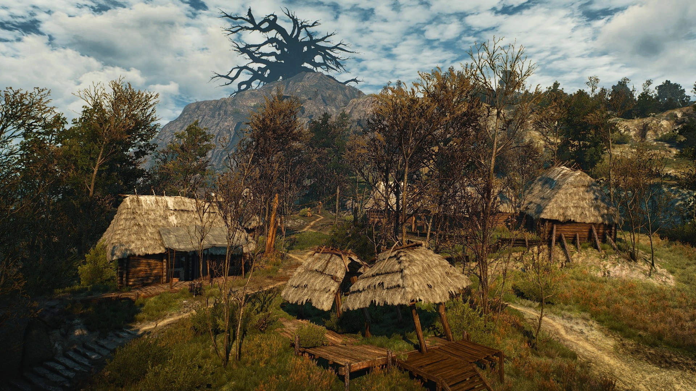
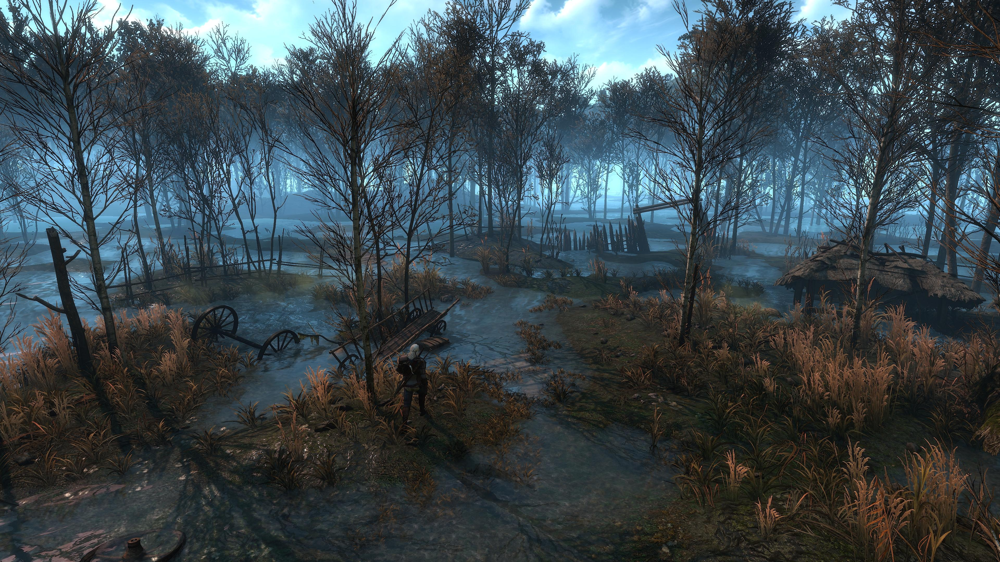

Na úpatí hory leží malá osada, jejíž obyvatelé se drasticky liší od zbytku zuboženého Velenu. Zatímco jinde vládne hladomor, lidé pod Lysou horou žijí v blahobytu. Mají dostatek jídla, tancují, pijí a oslavují.Tento blahobyt má však děsivé pozadí
Každý rok pořádají velkolepý rituál na počest svých patronek -Ježibab. Vesničané se sjíždějí z celého okolí, aby hodovali a oslavovali "štědrost" svých božstev. Tři vybraní mladí lidé (panny a mladíci) z vesnice dostanou "čest" vystoupat na vrchol hory přímo k prastarému stromu, aby se setkali s Dámami lesa. Vesničané věří, že tito vyvolení budou žít v nebeském paláci. Ve skutečnosti slouží jako hlavní chod na hostině Ježibab.
Lidé pod horou vědomě ignorují fakt, že se z vrcholu nikdo nikdy nevrátil. Stará Tekla, slepá stařena, která rituál výběru vede, funguje jako fanatický strážce tradic a nepustí nahoru nikoho, kdo neprojde její zkouškou.

Hrad Vranohrad je bývalé sídlo velenského šlechtice, které před válkou sloužilo jako menší, celkem nevýznamná dřevěná pevnost. Po invazi Nilfgaardu a útěku původního pána se hradu zmocnil Philip Strenger, známý jako Krvavý baron, a udělal z něj neoficiální hlavní město celé oblasti.
Hrad není kamenný palác, ale drsná dřevěná ostrožna obklopená hlubokým příkopem a palisádami. Všude je bláto, chudoba a zápach.Dolní podhradí obývají zbídačení rolníci a řemeslníci. Horní nádvoří s hlavním domem a stájemi kontroluje baronova posádka.Pod hradem se nachází rozsáhlé sklepení a staré chodby. Baron je komplexní, tragická postava. Není to rozený sadista, ale zlomený alkoholik a válečný veterán. Svým lidem vládne pevnou rukou, ale v osadě udržuje jakýsi zvrácený pořádek - výměnou za zásoby jídla a ženy poskytuje rolníkům ochranu před Nilfgaardem a monstry z bažin. Jeho soukromý život na hradě je však plný domácího násilí, které vedlo k útěku jeho ženy Anny a dcery Tamary.

Přežít v blatech je pro obyčejného člověka téměř nemožné. Prostředí samotné je stejně smrtonosné jako monstra, která v něm žijí. Ježibaby - Šeptana, Pletana a Vařena - jsou prastará, mocná božstva, která Velen ovládala dávno před příchodem prvních lidí i prvních zaklínačů. Jsou to sestry spojené temným rituálním poutem.
Na rozdíl od iluzí krásných žen, kterými se prezentují na svých rituálních tapiseriích, jsou Ježibaby v reálu monstrózní, tlustá stvoření složená z hnijícího masa, lidských kostí, hmyzu a zvířecích trofejí. Jejich moc vychází z krve, lidských obětí a rituálního kanibalismu. Ovládají počasí, nemoci, kletby a dokážou věštit budoucnost z uříznutých lidských uší. Na blatech provozují zvrácený sirotčinec. Starají se o opuštěné děti, krmí je, ale dělají to jen proto, aby si je vykrmily na svou každoroční hostinu, kde lidské maso zapíjejí magickou polévkou.